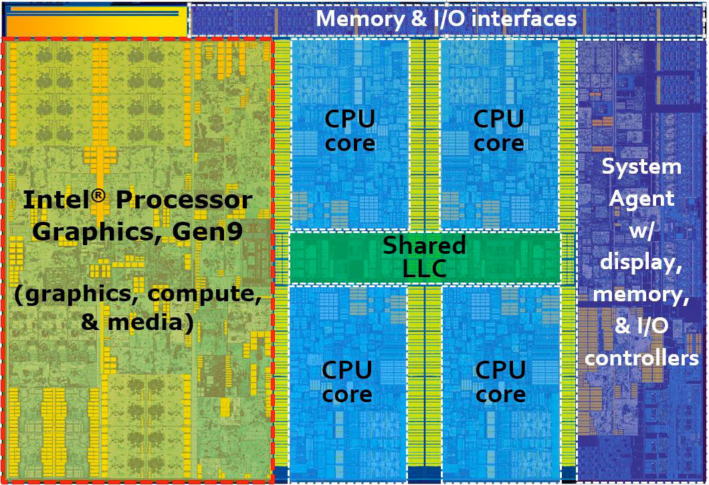

Skip straight to the Multimedia Gallery.
Topic of Interest: Semiconductor Hardware & Processing Power
The modern tech landscape is driven by innovations in mobile silicon, desktop consumer CPUs, and dedicated graphics microarchitectures.
Industry Leader Reference Hub
Intel Processors | Nvidia Graphics | Qualcomm Mobile SoCs | Apple M-Series & A-Series
Interactive Semiconductor Chip Map
Click on the different hardware die sectors below to explore manufacturing architectures:
